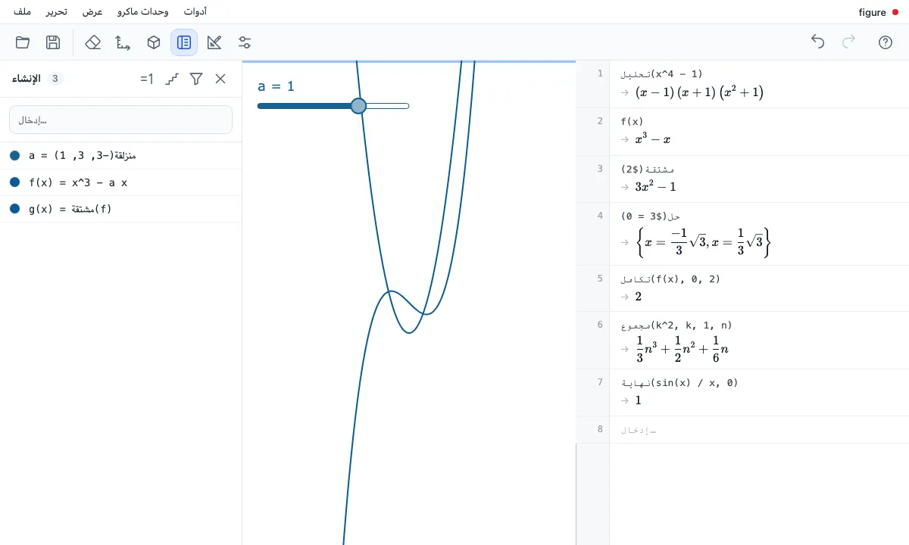

الحساب الرمزي
يحسب DocGeo قيمًا مضبوطة بواسطة Giac، محرّك الحساب الرمزي في Xcas وGeoGebra: المشتقات، الدوال الأصلية، التحليل إلى عوامل، المعادلات، النهايات، المجاميع، في صيغ الشكل كما في عرض الحساب الرمزي. ويجد أيضًا معادلة محل هندسي ويبرهن خصائص هندسية.

يُحمَّل Giac أول مرة يحتاجه فيها حساب، ولا يُحمَّل أبدًا لشكل لا يحتاجه. تُحفظ آخر الأجوبة في الشكل: فيُفتح ويُعرض دون انتظار Giac، حتى دون اتصال. إذا تعذّر تحميل Giac، يظهر «⚠ Giac» أسفل اليسار: تبقى الأجوبة المعروفة معروضة، والأخرى غير معرّفة.
أوامر الحساب الرمزي
تُستعمل في أي صيغة، مثل الدالة. التعبير الذي صيغته أحد هذه الأوامر فقط يعرض جواب Giac بدل صيغته.
| الأمر | النتيجة |
|---|---|
مشتقة(f), مشتقة(e, v),
مشتقة(e, v, n)
|
المشتقة، المشتقة من الرتبة n بالنسبة إلى v |
تكامل(e), تكامل(e, v)
|
الدالة الأصلية |
تكامل(x^2, 0, a),
تكامل(e, v, a, b)
|
التكامل من a إلى b، قيمة مضبوطة |
تحليل(e) |
التحليل على الأعداد الجذرية: يبقى
x^2 - 2 كما هو
|
تحليلغيرنسبي(e) |
التحليل بالجذور: (x − √2)(x + √2) |
نشر(e), تبسيط(e) |
الصيغة المنشورة، الصيغة المبسّطة |
حل(x^2 = 2), حل(e, v)
|
قائمة مرتّبة بالحلول الحقيقية لمعادلة، أو لتعبير منعدم |
حلمركب(e) |
الحلول المركّبة |
مجموع(e, k, a, b) |
مجموع e لـ k صحيح من a إلى b |
نهاية(e, a),
نهاية(e, v, a)
|
النهاية عند a، التي قد تكون ∞ |
كثيرحدودتايلور(e, a, n),
كثيرحدودتايلور(e, v, a, n)
|
كثير حدود تايلور من الرتبة n عند a |
المتغير v هو x أو y أو z أو t، افتراضيًا أول ما يقرؤه التعبير.
تُكتب دالة من الشكل باسمها: g(x) = مشتقة(f).
-
تبقى المنزلقة رمزًا بالنسبة إلى Giac: يعرض
تحليل(x^2 - a)x² − a حتى عندما تساوي a العدد 4. تحريك المنزلقة لا يطلب إذن شيئًا من Giac: يُعاد تقييم الجواب فقط، أثناء الحركة. -
استثناءات: رتبة n لكثير حدود تايلور، وحدود مجموع ليس له شكل
بسيط (
مجموع(1/k, k, 1, n))، تُقرأ بقيمتها: تعطي المنزلقة جوابًا لكل قيمة صحيحة. -
يبقى
تكامل(f, a, b)، حيث f اسم دالة، الأمرَ الذي يرسم المساحة؛ أماتكامل(x^2, 0, 1)أوتكامل(e, v, a, b)فيحسب القيمة المضبوطة. - ما دام الجواب لم يصل، يحتفظ الكائن بآخر قيمة له. الجواب الذي لا يستطيع DocGeo قراءته يجعل الكائن غير معرّف. يحسب DocGeo المشتقة بنفسه في انتظار Giac.
عرض CAS
مثل عرض GeoGebra: أسطر حساب مرقّمة، بجانب الشكل أو في علامة تبويب خاصة بها.
| الإجراء | الطريقة |
|---|---|
| إضافة العرض | ملف › العرض › عرض CAS جديد (واحد لكل شكل)، أو ملف › علامة تبويب CAS جديدة («CAS1»، «CAS2»…) |
| حساب سطر | الكتابة في السطر الأخير الفارغ، ثم Enter: يظهر الجواب وينتظر سطر جديد |
| تعديل سطر | النقر عليه، ثم Enter؛ يعيد Esc النص السابق، وينتقل ↑ و↓ من سطر إلى آخر |
| حذف سطر | إفراغه ثم Enter: تُزاح الأرقام التالية |
| حذف العرض | ملف › العرض › حذف عرض CAS |
يُلغى كل تغيير بـ تراجع. يُرفض السطر غير المفهوم، باللون الأحمر.
كتابة سطر
-
السطر صيغة، بأمر أو دونه:
sqrt(12) - sqrt(3)يعطي √3، وتحليل(x^4 - 1)تحليله. -
$2هو جواب السطر 2. عند حذف سطر، يُعاد ترقيم$n، وتُستبدل الإشارة إلى السطر المحذوف بصيغته. -
b := 3وh(x) := x^2 + 1يعرّفان عددًا أو دالة للأسطر التالية. -
تُقرأ كائنات الشكل بقيمتها الحالية: مع a = 2، يعطي
a^2العدد 4. عند تحريكها، تُعاد حسابات الأسطر التي تقرؤها. الحرف الذي ليس كائنًا متغير حر: يبقىb^2b². -
يُكتب
piوlnكما في GeoGebra، و∞أيضًاinf. الزوايا دائمًا بالراديان، حتى في شكل بالدرجات. -
قيمةعددية(e)وقيمةعددية(e, n)يعطيان قيمة تقريبية (بـ n رقمًا)؛ وإبقاءالإدخال(e)يعرض e كما هو، دون حساب. السطر بين علامتي تنصيص،"حساب مضبوط"، نص بسيط. -
يحل
?محل جواب لا يعطيه Giac أو لا يستطيع DocGeo قراءته.
الإشارة بالفأرة
أثناء كتابة سطر بدأ بالفعل، يكتب النقر على كائن من الشكل اسمه؛
ويكتب النقر على سطر آخر $n الخاص به. في سطر فارغ،
يستجيب الشكل كالمعتاد.
تعريف كائن من الشكل
التعريف الذي لا يقرأ إلا كائنات من الشكل ينشئ الكائن أيضًا، مع
سطره في الإنشاء: m(x) := x^2 + a يرسم الدالة m. أما
التعريف الذي يقرأ متغيرًا حرًا أو $n أو اسمًا
معرّفًا في العرض فقط (n := b^2) فيبقى خاصًا بالعرض.
في القارئ، تُعرض الأسطر بلغة المتصفح.
المنحنيات الجبرية
المعادلة من أي درجة، أو غير الحدودية، المكتوبة في الإنشاء منحنى:
f = x^3 + y^3 = 3x y (ورقة ديكارت)،
c = sin(x) = y. يُرسم حيث يعبر النافذة ويتبع
النافذة عند تحريكها؛ ويمكن وضع نقاط عليه وتقاطعه مع كائنات أخرى.
| الأمر | النتيجة |
|---|---|
معادلةمحلهندسي(M, P) |
المنحنى كاملًا الذي ترسمه النقطة M عندما تجوب النقطة على كائن P كائنها |
منحنىمغلّف(d, P) |
المنحنى كاملًا المماس لمواضع المستقيم d عندما تجوب P كائنها |
كما في GeoGebra، هي المعادلة كاملة، بكل فروعها، لا الجزء المقطوع
فقط: معادلةمحلهندسي لنقطة تجوب قطعة يعطي المستقيم.
في انتظار Giac، أو لإنشاء لا يترجمه (الماكرو، المنصّفات، الدائرة
المحاطة، منزلقة كمحرّك، الفضاء)، هو المحل المقطوع لـ
محلهندسي.
البرهان
ستة محمولات، كل وسيط فيها اسم كائن، تقول هل تتحقق خاصية في الشكل
كما هو: true أو false.
| المحمول | صحيح إذا |
|---|---|
متسامتة(A, B, C) |
كانت النقاط الثلاث على استقامة واحدة |
متوازية(d, e),
عمودية(d, e)
|
كانت المستقيمات أو القطع أو أنصاف المستقيمات متوازية، متعامدة |
مشتركةعلىالدائرة(A, B, C, D) |
كانت النقاط الأربع على دائرة واحدة (أو مستقيم واحد) |
متزامنة(d, e, f) |
مرّت المستقيمات الثلاثة بنقطة واحدة (أو كانت متوازية) |
متساوية(a, b) |
تطابقت نقطتان أو مستقيمان أو دائرتان؛ أو كان لقطعتين الطول نفسه؛ أو تساوى عددان |
يقول برهن(p)، حيث p أحد هذه المحمولات، هل هو صحيح
عمومًا: لكل مواضع النقاط الحرة والنقاط على كائنات، ما
عدا الحالات المنحلّة. مع G = مركزالثقل(A, B, C)،
يصبح متسامتة(A, B, G) صحيحًا عند وضع C على (AB)،
لكن برهن(متسامتة(A, B, G)) يبقى خاطئًا. يترجم Giac
الإنشاء إلى معادلات، كما يفعل GeoGebra: يصل الجواب في بضع ثوانٍ
على الأكثر، ويُحفظ في الشكل.
-
يشمل الحساب كل التقاطعات معًا: للحديث عن التقاطع الثاني
لمستقيم ودائرة يمرّان بنقطة A، أنشئه بـ
تقاطعآخر(c, d, A). -
يبقى
برهنغير معرّف لإنشاء لا يترجمه (إنشاءات معادلةمحلهندسي، أو زاوية أو نسبة أو نصف قطر ليس كسرًا بسيطًا، مثل دوران بـ 60°)، وفي عرض CAS. -
الوسائط أسماء: أنشئ المستقيمات وسمّها أولًا،
برهن(متوازية(d, e)).
أشكال GeoGebra
عند الاستيراد تُنقل أوامر الحساب الرمزي في الصيغ، وأسطر عرض CAS
في GeoGebra، وأسطر حاسبته Suite، وLocusEquation
وEnvelope وProve والمحمولات. يُبلَّغ
عن الخلية التي تستعمل أمرًا ليس في DocGeo.